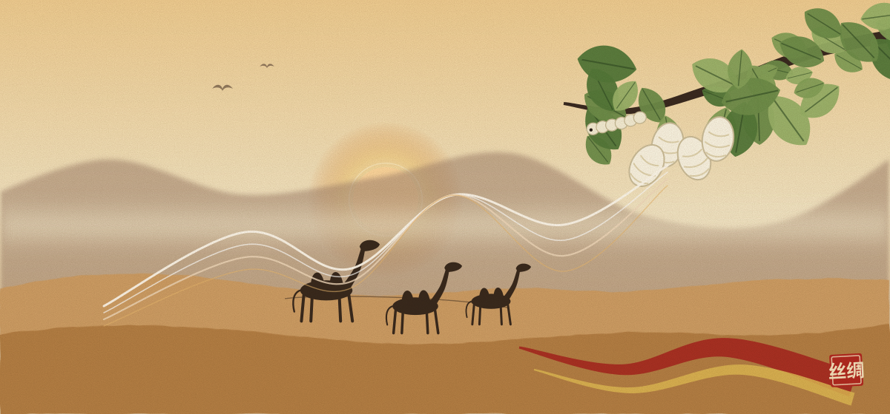

Tiến độ được lưu ngay trên trình duyệt của bạn
Lộ trình đọc gợi ý
Đọc từ thuở khai thiên lập địa, qua nghề nông và thủ công, đến các phát minh lớn.

Meow Meow · Kiến thức cần nhớ
Hai mươi sáu câu chuyện nhỏ về thần thoại, nghề nông, phát minh, công trình, giao lưu, tri thức và nghệ thuật (từ thư pháp, trà đến âm nhạc, hí khúc và lễ hội) đã định hình một nền văn minh – kèm tranh thủy mặc, từ vựng và câu hỏi ôn tập.
Đọc từ thuở khai thiên lập địa, qua nghề nông và thủ công, đến các phát minh lớn.